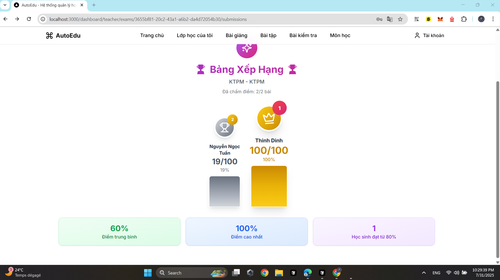
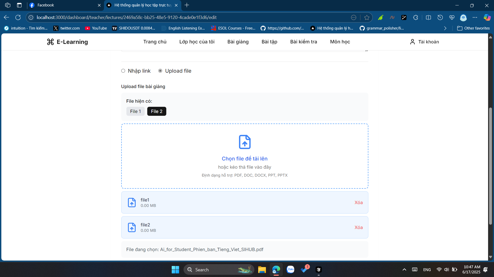
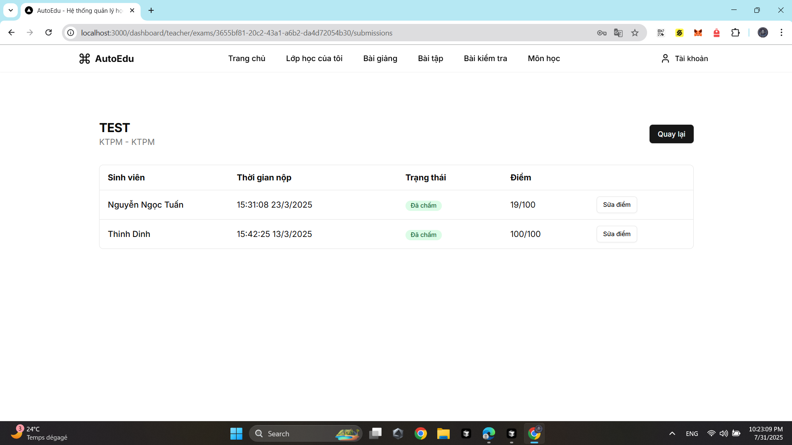
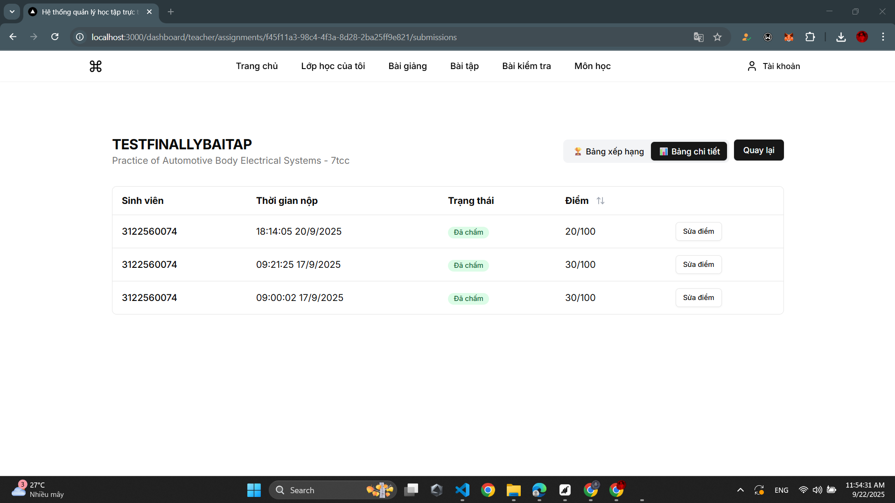
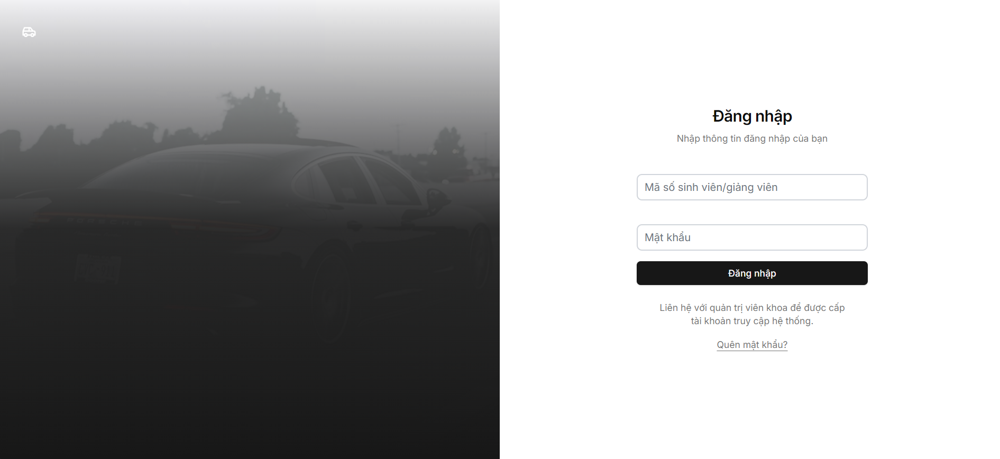

Platform
Web Application
Built with Next.js 14 and TypeScript.
Executive summary of scope, architecture, and delivery profile.
Web Application
Built with Next.js 14 and TypeScript.
Student, Teacher, Admin
Course, assignment, exam, analytics, and account flows.
App Router + Supabase
Server components, API routes, auth, database, and storage.
RBAC + RLS
Role-based access with row-level security and input validation.
Vercel Ready
Production build and cloud deployment workflow defined.
Business analysis summary for interview walkthrough and portfolio validation.
AutoEdu is a modern learning management system designed for educational institutions to manage courses, lectures, assignments, examinations, and student performance in one unified platform.
The system follows a mobile-first approach and supports real-time updates, enabling students, teachers, and administrators to collaborate effectively with consistent data synchronization.
The primary goal is to digitize class operations end-to-end while ensuring usability, scalability, and secure role-based access across all workflows.
The solution is structured around practical modules for digital learning operations.
Representative screens for dashboard, class flows, and learning operations.




